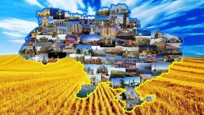

Україна
Україна: історія, культура, природа та сучасність
Україна — це велика європейська держава, що розташована в східній частині Європи. Вона межує з Польщею, Словаччиною, Угорщиною, Румунією, Молдовою, Білоруссю та Росією. Україна має багату історію, унікальну культуру, стратегічне географічне розташування та надзвичайно мальовничу природу.
Історія України
Історія України сягає глибокої давнини.
На її території існували
різні цивілізації, починаючи від трипільської культури, яка
існувала
понад 5000 років тому. У IX столітті тут утворилася могутня
держава
Київська Русь, яка стала однією з найвпливовіших у середньовічній
Європі.
Саме Київська Русь вважається однією з перших державних
формацій, що вплинули на розвиток східнослов'янських народів.
Основні періоди історії України:
- Київська Русь (IX-XIII ст.) – центр східнослов'янської культури.
- Козацька доба (XVI-XVIII ст.) – боротьба за незалежність.
- Українська Народна Республіка (1917-1921) – перша спроба незалежності.
- Радянський період (1922-1991) – індустріалізація, війни та репресії.
- Незалежна Україна (з 1991 р.) – демократичний розвиток.
Докладніше про історію: Вікіпедія – Історія України